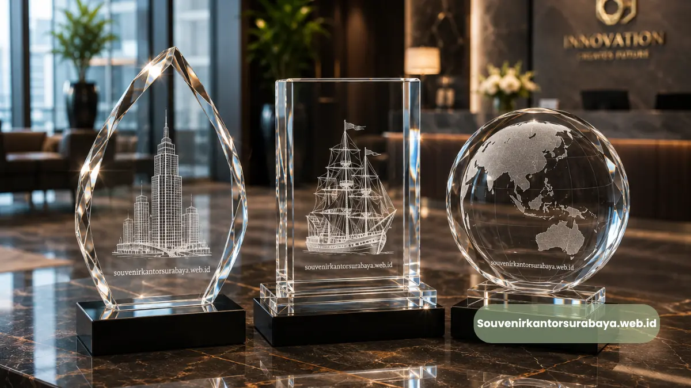
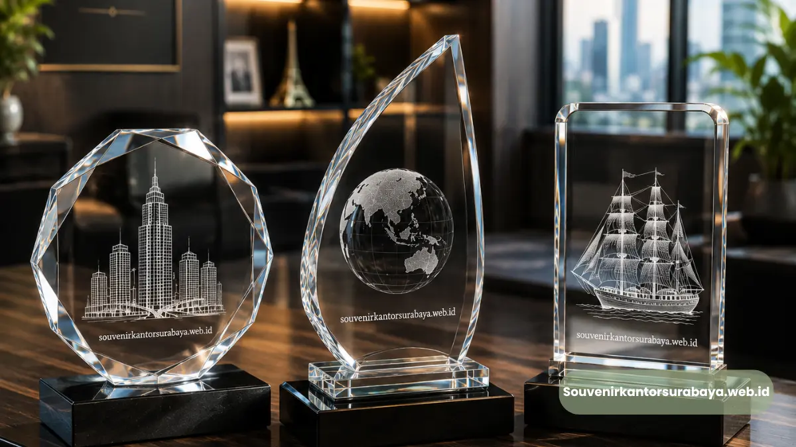

Plakat Kristal 3D vs Plakat Kayu untuk Penghargaan Kantor.
Plakat Kristal 3D vs Plakat Kayu untuk Penghargaan Kantor
Plakat kristal 3D dan plakat kayu sama-sama digunakan sebagai souvenir penghargaan kantor, namun keduanya berbeda dari segi material, daya tahan, dan kesan visual yang dihadirkan kepada penerima penghargaan.
- Plakat kristal 3D menonjolkan efek visual tiga dimensi dan kesan mewah.
- Plakat kayu menonjolkan kesan hangat, alami, dan tradisional.
- Kristal umumnya lebih tahan terhadap goresan dibanding kayu berlapis cat.
- Kayu lebih ringan dan sering dipilih untuk desain bertema rustic atau natural.
- Pemilihan material sebaiknya disesuaikan dengan tema acara dan citra perusahaan.
Perbedaan Material dan Proses Pembuatan
Plakat kristal 3D dibuat dari blok kristal padat yang diukir menggunakan teknologi laser presisi tinggi, menghasilkan gambar tiga dimensi di dalam material tanpa memerlukan cat atau tinta tambahan.
Sebaliknya, plakat kayu umumnya dibuat melalui proses ukir manual atau mesin CNC, kemudian dilapisi finishing seperti pernis atau cat untuk mempertegas detail teks dan logo.
Perbedaan proses ini turut memengaruhi tampilan akhir kedua material. Plakat kristal cenderung menghasilkan efek visual yang lebih tajam dan modern, sementara plakat kayu menghasilkan kesan yang lebih hangat dan klasik.
Apakah Proses Pembuatan Kristal Lebih Rumit Dibanding Kayu?
Proses pembuatan plakat kristal 3D umumnya memerlukan mesin laser khusus dengan tingkat presisi tinggi, sehingga secara teknis prosesnya dapat dikatakan lebih kompleks dibanding ukiran kayu konvensional, meski durasi pengerjaan keduanya dapat bervariasi tergantung tingkat kerumitan desain.
Baca Juga
Daya Tahan dan Perawatan Kedua Material
Dari sisi daya tahan, material kristal umumnya lebih tahan terhadap goresan permukaan dan perubahan warna dibanding kayu, terutama jika kayu tidak dilapisi finishing yang memadai.
Kristal juga cenderung tidak mudah lapuk atau dimakan rayap seperti halnya material kayu dalam jangka panjang.
Namun demikian, kayu memiliki keunggulan dari sisi bobot yang lebih ringan dan risiko pecah yang lebih rendah dibanding kristal apabila terjatuh.
Perawatan kedua material juga berbeda, di mana kristal umumnya cukup dibersihkan dengan lap kering atau kain microfiber, sementara kayu memerlukan perawatan tambahan seperti pengolesan minyak kayu secara berkala agar tetap awet.
Material Mana yang Lebih Mudah Dirawat?
Secara umum, plakat kristal lebih mudah dirawat karena cukup dibersihkan dengan kain kering tanpa memerlukan perlakuan khusus, sementara plakat kayu memerlukan perawatan tambahan agar permukaannya tetap terjaga dalam jangka panjang.
Kesan Visual dan Nilai Simbolis bagi Penerima
Dari sisi kesan visual, plakat kristal 3D umumnya memberikan kesan yang lebih modern, mewah, dan berkelas berkat efek tiga dimensi serta kilauan alami material kristal.
Kesan ini sering dianggap lebih sesuai untuk penghargaan formal seperti penghargaan kinerja tahunan atau apresiasi kepada mitra bisnis strategis.
Di sisi lain, plakat kayu menghadirkan kesan yang lebih hangat, alami, dan personal, sehingga sering dipilih untuk acara dengan tema yang lebih santai atau penghargaan bernuansa komunitas.
Kedua material sama-sama dapat memberikan nilai simbolis yang kuat, tergantung pada bagaimana desain dan pesan penghargaan disampaikan.
Mana yang Lebih Sesuai untuk Kesan Korporat Formal?
Untuk kebutuhan penghargaan dengan kesan korporat formal, plakat kristal 3D umumnya menjadi pilihan yang lebih sesuai karena tampilannya yang premium dan modern.
Efek tiga dimensi pada kristal juga memberikan nilai tambah tersendiri dibanding tampilan datar pada plakat kayu konvensional.
Meski begitu, keputusan akhir tetap bergantung pada preferensi perusahaan, tema acara, serta pesan yang ingin disampaikan kepada penerima penghargaan.

Plakat kristal 3D memberikan kesan modern, sementara plakat kayu menghadirkan nuansa alami dan hangat.
Ketahanan Terhadap Perubahan Cuaca dan Lingkungan Kantor
Faktor lingkungan penyimpanan juga menjadi pertimbangan penting saat membandingkan kedua material ini.
Plakat kristal umumnya lebih stabil terhadap perubahan suhu dan kelembapan ruangan dibanding kayu, yang cenderung lebih sensitif terhadap kelembapan tinggi dan berisiko mengalami perubahan bentuk atau warna dalam jangka panjang apabila tidak disimpan dengan baik.
Di lingkungan kantor ber-AC dengan kelembapan yang relatif terkontrol, kedua material sebenarnya dapat bertahan dengan baik.
Namun, untuk ruang penyimpanan yang lebih terbuka atau kurang terkontrol suhunya, material kristal umumnya menjadi pilihan yang lebih aman dari sisi ketahanan jangka panjang.
Nilai Investasi Jangka Panjang bagi Perusahaan
Dari sisi nilai investasi, plakat kristal 3D umumnya dianggap memberikan nilai jangka panjang yang lebih tinggi karena daya tahannya yang lebih baik serta kesan premium yang cenderung tidak lekang oleh waktu.
Perusahaan yang rutin mengadakan acara penghargaan tahunan sering mempertimbangkan konsistensi kualitas material dari tahun ke tahun agar standar penghargaan tetap terjaga.
Meski biaya awal plakat kristal dapat sedikit lebih tinggi dibanding kayu pada beberapa kasus, ketahanannya dalam jangka panjang sering dianggap sebanding dengan kesan dan nilai simbolis yang dihadirkan kepada penerima penghargaan.
Pertimbangan ini penting terutama bagi perusahaan yang ingin menjadikan plakat penghargaan sebagai aset seremonial yang konsisten digunakan setiap tahun.
Kesimpulan
Baik plakat kristal 3D maupun plakat kayu memiliki karakter dan keunggulan masing-masing sebagai souvenir penghargaan kantor.
Plakat kristal 3D unggul dari sisi kesan modern, daya tahan permukaan, dan efek visual tiga dimensi, sementara plakat kayu menawarkan kesan hangat dan alami.
Jika perusahaan Anda ingin menghadirkan penghargaan dengan kesan premium dan berkelas, plakat kristal 3D dapat menjadi pilihan yang tepat.
Kunjungi souvenirkantorsurabaya.web.id sekarang untuk berkonsultasi mengenai desain plakat kristal 3D custom sesuai kebutuhan penghargaan kantor Anda.

Hawa Nadira
Tim penulis CorporateGifts ID berfokus pada strategi souvenir kantor, merchandise korporat, dan inovasi brand untuk klien B2B.
Keahlian: Branding perusahaan, produksi souvenir, paket event, desain materi promosi.
Artikel Terkait

Panduan Memilih Seminar Kit Premium
Ringkasan panduan memilih seminar kit premium yang tepat untuk acara dan kebutuhan branding perusahaan.
Baca Selengkapnya
Merchandise Perusahaan untuk Promosi Bisnis
Ide merchandise korporat yang efektif untuk meningkatkan visibilitas brand dan impresi profesional.
Baca Selengkapnya
Ide Souvenir Kantor
Pilihan souvenir kantor dengan sentuhan branding yang membuat acara perusahaan semakin berkesan.
Baca Selengkapnya